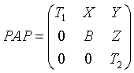
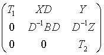

Intel® oneAPI Math Kernel Library Developer Reference - Fortran
Balances a general real/complex matrix.
call psgebal( job, n, a, desca, ilo, ihi, scale, info )
call pdgebal( job, n, a, desca, ilo, ihi, scale, info )
call pcgebal( job, n, a, desca, ilo, ihi, scale, info )call pzgebal( job, n, a, desca, ilo, ihi, scale, info )
p?gebal balances a general real/complex matrix A. This involves, first, permuting A by a similarity transformation to isolate eigenvalues in the first 1 to ilo-1 and last ihi+1 to n elements on the diagonal; and second, applying a diagonal similarity transformation to rows and columns ilo to ihi to make the rows and columns as close in norm as possible. Both steps are optional.
Balancing may reduce the 1-norm of the matrix, and improve the accuracy of the computed eigenvalues and/or eigenvectors.
(global ) CHARACTER*1
Specifies the operations to be performed on a:
= 'N': none: simply set ilo = 1, ihi = n, scale(i) = 1.0 for i = 1,...,n;
= 'P': permute only;
= 'S': scale only;
= 'B': both permute and scale.
(global ) INTEGER
The order of the matrix A (n≥ 0).
REAL for psgebal
DOUBLE PRECISION for pdgebal
COMPLEX for pcgebal
COMPLEX DOUBLE for pzgebal
(local ) Pointer into the local memory to an array of size (lld_a, LOCc(n))
This array contains the local pieces of global input matrix A.
(global and local) INTEGER array of size dlen_.
The array descriptor for the distributed matrix A.
On exit, a is overwritten by the balanced matrix.
If job = 'N', a is not referenced.
See Notes for further details.
(global ) INTEGER
ilo and ihi are set to integers such that on exit matrix elements A(i,j) are zero if i > j and j = 1,...,ilo-1 or i = ihi+1,...,n.
If job = 'N' or 'S', ilo = 1 and ihi = n.
REAL for psgebal and pcgebal
DOUBLE PRECISION for pdgebal and pzgebal
(global ) array of size n.
Details of the permutations and scaling factors applied to a. If pj is the index of the row and column interchanged with row and column j and dj is the scaling factor applied to row and column j, then
scale(j) = pj for j = 1,...,ilo-1, ihi+1,..., n
scale(j) = dj for j = ilo,...,ihi
The order in which the interchanges are made is n to ihi+1, then 1 to ilo-1.
(global ) INTEGER
= 0: successful exit.
< 0: if info = -i, the i-th argument had an illegal value.
The permutations consist of row and column interchanges which put the matrix in the form

where T1 and T2 are upper triangular matrices whose eigenvalues lie along the diagonal. The column indices ilo and ihi mark the starting and ending columns of the submatrix B. Balancing consists of applying a diagonal similarity transformation D-1BD to make the 1-norms of each row of B and its corresponding column nearly equal. The output matrix is

Information about the permutations P and the diagonal matrix D is returned in the vector scale.